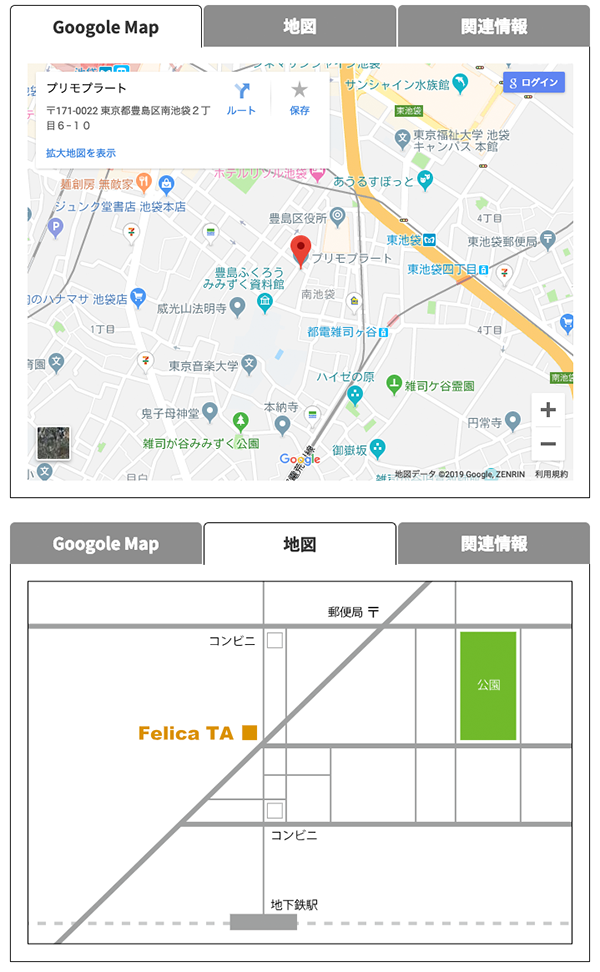

タブパネルとは
- タブの切替は複数のコンテンツの表示・非表示を操作してコンテンツが変わっているように見せる
- 要素を非表示にするには hideメソッドを使い、表示には showメソッドを使う
- パネルの順番とコンテンツの順番が比例している場合は、indexメソッドで何番目の要素が選択されているかを取得して、その番号のコンテンツを表示させる
一般的なタブパネル用のHTML
<div class="tab"> <ul class="menu"> <li><a href="#">おすすめ</a></li> <li><a href="#">イベント</a></li> <li><a href="#">お知らせ</a></li> </ul> <div class="tabBox"><p>ここにおすすめの内容が入ります。</p></div> <div class="tabBox"><p>ここにイベントの内容が入ります。</p></div> <div class="tabBox"><p>ここにお知らせの内容が入ります。</p></div> </div>
セマンティックなマークアップの視点から見ると正しくはありません。
しかし、パネルとコンテツがこの並びにすると作成しやすいため、jQueryを使ってこの並びにしていきます。
正しいマークアップ
<div class="tab"> <div class="tabBox"> <h4 class="tabMenu">おすすめ</h4> <p>ここにおすすめの内容が入ります。</p> </div><!-- /.tabBox --> <div class="tabBox"> <h4 class="tabMenu">イベント</h4> <p>ここにイベントの内容が入ります。</p> </div><!-- /.tabBox --> <div class="tabBox"> <h4 class="tabMenu">お知らせ</h4> <p>ここにお知らせの内容が入ります。</p> </div><!-- /.tabBox --> </div><!-- /.tab -->
タブパネルを作成
タブパネルのグループを作成
- 「.tab」がしてされた要素内の先頭に、「.menu」が指定されたdiv要素作成します
- prepend( )メソッドは、要素内の先頭にコンテンツを作成します
$('.tab').prepend('<div class="menu"></div>');
つまり、
$('.tab')の１番めの子要素として次のコンテンツを作成する「
」
タブパネルのグループの中に要素を移動
- 「.menu」の中に「.tabMenu」が設定された要素を移動する
- prepend( )メソッド
- 要素を作成する場合は、「$(作成する場所) .prepend( 作成する要素)」
- 要素を移動する場合は、「$(移動させる場所) .prepend( 移動させる要素を参照)」
$('.menu').prepend($('.tabMenu'));
指定された要素の子要素を a要素で囲む
- 「.tabMenu」が指定された要素の子要素を a要素で囲みます
- wrapInner( )メソッドは、参照した要素の子要素を指定した要素で囲みます
$('.tabMenu').wrapInner('<a href="javascript: void(0);"></a>');
まとめると、以下のようになります。
$(function(){ $('.tab').prepend('<div class="menu"></div>'); $('.menu').prepend($('.tabMenu')); $('.tabMenu').wrapInner('<a href="javascript: void(0);"></a>'); });
consoleで確認すると以下のようになります
{kind=link}
はじめに表示されるコンテンツを設定
$( '.tab .tabBox' ) .の中で次の条件にあう要素を除外して
($( '.tab .tabBox' ) .の１つ目) .非表示にする
- notメソッドを使い、「current」の設定されている要素以外を、hideメソッドで非表示にしています
- 「current」の値が「0」となっているため、１つ目の「.tabBox」が取得されています
var current = 0; var show = $('.tab .tabBox').eq(current); $('.tab .tabBox').not(show).hide(); $('.tab .tabMenu').eq(current).find('a').addClass('current');
- notメソッドは、要素参照から指定した条件の要素を除外します
- eqメソッドは、要素参照の中から指定した順番にある要素を指定します
- 「.tabBox」に該当する要素が３つある場合は、「0」と指定すると１つ目の要素だけを参照します
- hideメソッドは、参照した要素を非表示にします
- 表示されているコンテンツに対応した「.tabMenu」に「.current」を指定します
- addClassメソッドは、参照した要素に指定したクラスを追加します
- そのクラスを削除したい場合は、removeClassメソッドを指定します
コンテンツを切り替える
- クリックイベントを使用しナビゲーションパネルを選択したとき、対応したコンテンツが表示されるようにする
コンテンツの表示・非表示
$('.tab .tabBox').hide().eq($('.menu a').index(this)).show(); });
- 「.tabBox」が指定された要素を１度すべて表示にします
- その後、選択したナビゲーションパネルの順番に応じたコンテンツを、showメソッドで表示します
- 選択されたナビゲーションパネルの順番を決めるには、indexメソッドを使用します
- 「$('.menu a').index(this)」は、「this」が「clickイベントを発生させた要素」とい意味になります
クラスの切り替え
$('.tab .tabMenu a').removeClass('current'); $(this).addClass('current'); });
- 一度すべての「.current」を削除して、選択されたナビゲーションパネルのみに「.current」を追加しています
$('.menu a').on('click', function(){ $('.tab .tabBox').hide().eq($('.menu a').index(this)).show(); $('.tab .tabMenu a').removeClass('current'); $(this).addClass('current'); return false; });
- 「return false;」は、a要素がクリックされた際の動作をキャンセルしています
タブパネル - 実践
- 地図は、SVG形式で挿入

<!DOCTYPE html> <html lang="ja"> <head> <meta charset="UTF-8"> <meta name="viewport" content="width=device-width"> <title>タブパネル</title> <link href="https://fonts.googleapis.com/css?family=Noto+Sans+JP:400,700&subset=japanese" rel="stylesheet"> <link rel="stylesheet" href="tab2.css"> <script src="https://ajax.googleapis.com/ajax/libs/jquery/3.7.1/jquery.min.js" defer></script> <script src="js/script.js" defer></script> </head> <body> <div class="container"> <div class="content"> <ul class="tab"> <li><a href="#tab1" class="current">Googole Map</a></li> <li><a href="#tab2">地図</a></li> <li><a href="#tab3">関連情報</a></li> </ul> <ul class="panel"> <li id="tab1"><iframe class="googleMap" src="https://www.google.com/maps/embed?pb=!1m18!1m12!1m3!1d3239.0099798528263!2d139.71353570170646!3d35.72597308350004!2m3!1f0!2f0!3f0!3m2!1i1024!2i768!4f13.1!3m3!1m2!1s0x60188d6be1f480b5%3A0x727a3472e73742fe!2z44OX44Oq44Oi44OX44Op44O844OI!5e0!3m2!1sja!2sjp!4v1550022110118" frameborder="0" style="border:0" allowfullscreen></iframe></li> <li id="tab2"><a href="#"><img src="map0213.svg" alt="" class="svgImg"></a></li> <li id="tab3">ここに関連情報が入る</li> </ul> </div><!-- /.content --> </div><!-- /.container --> </body> </html>
jQueryの記述
- テキスト内容とは別の記述
タブパネルの初期表示状態の設定
- CSSの記述まででは、すべてのパネルが展開した状態ですから、選択状態のパネル（a要素）のclass属性が「selected」のタブに対応するパネル以外を「hide()」で非表示にします
- li要素の後に、否定擬似クラスの「:not()」がついているので、この場合はid属性に「#tab1」がついたパネル以外が「hide()」で非表示になります
書き換えると、
$( '.panel li:not(#tab1)' ).hide();
タブがクリックされたときのイベントの設定
- a要素に設定する場合は、「return false;」を忘れずに記述する
$( '.tab li a' ).on ( 'click', function(){ return false; });
- タブがクリックされたとき、class属性「selected」がついていたところから削除し、クリックされたところに追加します
$( '.tab li a' ).removeClass( 'selected' ); $( $(this) ).addClass( 'selected' );
- すべてのぱねるを非表示にします
- 「$(this).attr( 'href' )」でクリックされたa要素のhref属性の値を取得して、値と同じ名前のid属性をもつパネルをshow()で表指示ます
$( '.panel li' ).hide(); $( $(this).attr( 'href' ) ).show();
body終了タグの前にembed
$(function(){ $('.panel>li:not(:first)').hide(); $('.tab a').on('click', function(){ $('a').removeClass('current'); $('.panel>li').hide(); $(this).addClass('current'); $($(this).attr('href')).show(); }); });